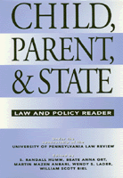

A thorough study of the legal policy in which our basic assumptions about juveniles and the tradeoff between punishment and procedure are delineated
A thorough study of the legal policy in which our basic assumptions about juveniles and the tradeoff between punishment and procedure are delineated


 A thorough study of the legal policy in which our basic assumptions about juveniles and the tradeoff between punishment and procedure are delineated
A thorough study of the legal policy in which our basic assumptions about juveniles and the tradeoff between punishment and procedure are delineated

|  |
Child, Parent, and StateLaw and Policy ReaderSponsorship by Univ. of Pennsylvania Law Reviewedited by Randall S. Humm, Beate Anne Ort, Martin Mazen Anbari, Wendy S. Lader and William Scott Bielpaper EAN: 978-1-56639-134-4 (ISBN: 1-56639-134-2) |
Philadelphia Book Clinic Certificate of Award, 1995
This unique interdisciplinary collection, compiled by the editors of the University of Pennsylvania Law Review, brings together the leading essays on family law in the United States. The authors—law professors, judges, public interest practitioners, and law students—express a variety of viewpoints and perspectives on law and public policy issues affecting children. Children, their parents, and the state create a triangle in which the "best interests of the child" often become lost. Covering a range of issues from child abuse, public education, and juvenile crime to drug addiction, homelessness, AIDS, and free speech, these accessible essays present rigorous debates about the rights of children within the social services, educational, health care, and criminal justice systems.
Excerpt available at www.temple.edu/tempress
Acknowledgments
Introduction – The Editors
Part I: Regulating the Child-Parent Relationship
Section 1: Reconceptualizing the "Best Interests" of the Child
1. Awarding Custody: The Best Interests of the Child and Other Fictions – Andrea Charlow
2. The Best Interests of the Child: Much Ado about Nothing? – Martin Guggenheim
3. The Use of Religion as Part of the "Best Interests" Test in Child Custody Decisions – Donald L. Beschle
4. Custody Denials to Parents in Same-Sex Relationships: An Equal Protection Analysis – Anne I. Seidel
5. Where Do Black Children Belong? The Politics of Race Matching in Adoption – Elizabeth Bartholet
Section 2: The Drug Addicted Parent
6. Prosecution of Mothers of Drug-Exposed Babies: Constitutional and Criminal Theory – Doretta Massardo McGinnis
7. Poor Mothers, Poor Babies: Law, Medicine and Crack – Barbara Bennett Woodhouse
8. Prosecution of Mothers of Drug-Exposed Babies: A Response to McGinnis – Paul A. Logli
Part II: Children and the Social Service System
Section 3: Child Abuse
9. In Search of Affirmative Duties toward Children under a Post-DeShaney Constitution – Amy Sinden
10. DeShaney and Child Welfare Reform – Cathleen Tucker and Paul Blatt
Section 4: Foster Care
11. Unsafe Havens: The Case for Constitutional Protection of Foster Children from Abuse and Neglect – Michael B. Mushlin
12. Making It Work: Implementation of Court Orders Requiring Restructuring of State Executive Branch Agencies – Chris Hansen
13. Protection of Foster Children: A Constitutional Duty Anchored in a State's Choices? – Brenda L. Kelley
Section 5: Homelessness
14. Homeless Families: Do They Have a Right to Integrity? – Donna Mascari Baker
15. Combating Family Homelessness to Protect Children – Steven Banks
16. Do the Poor Have a Right to Family Integrity? – Stephen Wizner
Part III: Children and School
Section 6: Access to Quality Education
17. A New Legal Duty for Urban Public Schools: Effective Education in Basic Skills – Gershon M. Ratner
18. New Educational Standards and the Right to Quality Education – Paul Weckstein
19. Avoiding the Limitations of the Texas and New Jersey School Finance Remedies with an Educational Adequacy Theory of School Reform – Paul Minorini
Section 7: Student Speech Rights
20. Hazelwood School District and the Role of First Amendment Institutions – Bruce C. Hafen
21. From Consistency to Confusion: The Aftermath of Hazelwood School District v. Kuhlmeier – Mark Goodman
22. Student Speech Rights: The True Meaning of Hazelwood School District v. Kuhlmeier – Jay Worona
Part IV: Children and Health Policy
Section 8: Paying for Children's Health Care
23. Paying for Children's Medical Care: Interaction between Family Law and Health Care Cost Containment – Walter J. Wadlington
24. Expanding Health Care for Children – Alice Sardell and Harvey Catchen
25. Universal Access to Health Care for Children – Judith Cohen Dolins, Jenifer D. C. Cartland, James G. Pawelski, and Beth K. Yudkowsky
Section 9: Medical Care and Parental Autonomy
26. Medical Care for the Child at Risk: On State Supervention of Parental Autonomy – Joseph Goldstein
27. Medical Care, Parental Autonomy, and Seriously Ill Newborns – Joel Frader, M.D.
28. "If I Can Say Yes, Why Can't I say No?" Adolescents at Risk and the Right to Give or Withhold Consent to Health Care – Jan C. Costello
Section 10: AIDS and Children
29. Undoing a Lesson of Fear in the Classroom: The Legal Recourse of AIDS-Linked Children – Lisa J. Sotto
30. Among Schoolchildren: AIDS, the Law, and the Public Schools – Barry Sullivan
31. Moving Toward Effective HIV Policies for Youth – Karla Kinderman
Part V: Children and the Criminal Justice System
Section 11: The Role of the Juvenile Court
32. Re-Imagining Childhood and Reconstructing the Legal Order: The Case for Abolishing the Juvenile Court – Janet E. Ainsworth
33. Re-Imagining the Juvenile Court – Mark I. Solen
34. Imagining Legal Scholarship: The Case for the Juvenile Court and for Teaching Juvenile Law and Procedure – Hunter Hurst
Section 12: Pretrial Detention
35. Schall v. Martin and Juvenile Detention – Robert G. Schwartz
36. Pretrial Detention: Law and Policy from the Juvenile Court Perspective – Gerald E. Radcliffe
Section 13: Capital Punishment
37. Perspectives on the Juvenile Death Penalty in the 1990s – Victor L. Streib
38. On the Death Penalty for Juveniles – Joseph L. Hoffmann
About the Contributors
Index
Randall Humm was Articles Editor of UPLR in 1991-1992, and a law clerk for Federal Judge Sarah Evans Barker from 1992 to 1994.
Beate Anna Ort was Special Projects Editor of UPLR in 1991-1992, and is an assistant general counsel with the Immigration and Naturalization Service.
Martin Mazen Anbari was Editor-in-Chief of UPLR in 1992-1993, and is a resident at the Mallinckrodt Institute of Radiology, Barnes Hospital, in St. Louis.
Wendy S. Lader was Special Projects Editor of UPLR in 1991-1992, and is an attorney in Washington, D.C.
William Scott Biel was Editor-in-Chief of UPLR in 1991-1992, and is an attorney with the law firm of Luce, Forward, Hamilton and Scripps in San Diego
Contributors: Andrea Charlow, Martin Guggenheim, Donald L. Beschle, Anne I. Seidel, Elizabeth Bartholet, Doretta Massardo McGinnis, Barbara Bennett Woodhouse, Paul A. Logli, Amy Sinden, Cathleen Tucker, Paul Blatt, Michael B. Mushlin, Chris Hansen, Brenda L. Kelley, Donna Mascari Baker, Steven Banks, Stephen Wizner, Gershon M. Ratner, Paul Weckstein, Paul Minorini, Bruce C. Hafen, Mark Goodman, Jay Worona, Walter J. Wadlington, Alice Sardell, Harvey Catchen, Judith Cohen Dolins, Jenifer D. C. Cartland, James G. Pawelski, Beth K. Yudkowsky, Joseph Goldstein, Joel Frader, M.D., Jan C. Costello, Lisa J. Sotto, Barry Sullivan, Karla Kinderman, Janet E. Ainsworth, Mark I. Solen, Hunter Hurst, Robert G. Schwartz, Gerald E. Radcliffe, Victor L. Streib, and Joseph L. Hoffmann.
Law and Criminology
Family Policy
© 2015 Temple University. All Rights Reserved. This page: http://www.temple.edu/tempress/titles/1180_reg.html.